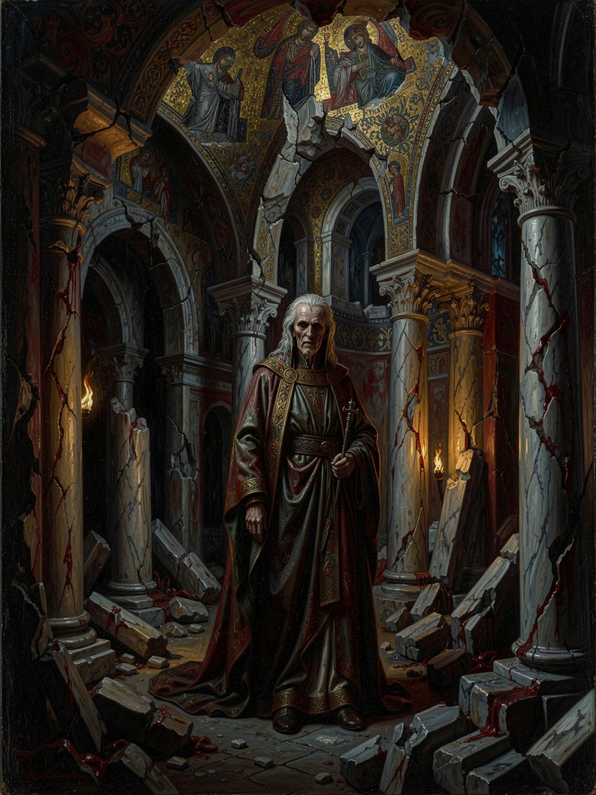

The ancient claim
The Carpathian Tzimisce
The oldest rulers of the East consider Buda-Pest theirs by ancient right, the Ventrue an eight-century usurpation, and 1242 the year the correction begins.
Goals
- Reclaim the lowlands — the vassals, revenant families and river-valley strongholds ceded during the Ventrue ascendancy.
- Finish the War of Omens: break the Council of Ashes, see Ceoris fall.
- Restore the old mandate — not merely to rule the city, but to have it acknowledged the Ventrue never had the right to.
- Contain the young, whose appetite for remaking things the elders find intolerable.
Key figures
- Vladimir Rustovitch·the Voivode of voivodes. Rarely seen, always felt.
- The claimant·a lowland voivode walking back into domains he held before the Ventrue pushed his clan uphill.
- A younger metamorphosist·bored by restoration, hungry for something new. A wedge.
The Carpathian voivodes let the Mongols through their passes to gut the Prince's clan, and now descend from their mountain eyries to reclaim the lowlands while the Ventrue are on their knees. They are not opportunists arriving late to a disaster; they are the previous owners, and they have been waiting eight centuries with the patience of men who measure time in bloodlines.
What makes the claimant dangerous is not his cruelty but the fact that he is correct about the injustice done to him, which makes him very hard to hate cleanly. The faction's one fracture is generational: the elders want the old order back exactly as it was, while the younger Fiends would rather remake Buda-Pest into something their sires would not recognise. Hospitality is all that forestalls open revolution inside the clan, and it is fraying.

The patient rival
The Bohemian Court
The most dangerous rival to a Ventrue Prince is not the Fiend at the gate — it is the Ventrue in Prague who does not raise his voice, keeps every boon, and is deciding whether a cousin who let his kingdom burn deserves to keep it.
Goals
- Absorb what Hungary can no longer hold — as opportunity, inheritance or client, whichever costs least.
- Never make a misstep. They do not gamble on Buda-Pest; they wait and let the Prince's weakness make their case.
- Win the Holy Roman Empire. The eastern moves serve a western game.
- Keep the debt running the right way. Every boon is credit they intend to call.
Key figures
- King Wenceslaus I·the mortal author of the Premyslid ascent.
- The Regent of Prague·has never lost a hand. Not cruel, not hasty — worse: correct, almost every time.
- A refugee Tremere client·magic on loan, and a reminder that the Prince's former allies now answer to Prague.
The one Cainite faction in the setting that is simply winning: the uncontested Ventrue of Bohemia, backing a brilliant mortal dynasty, who have not made a misstep and now look east at a broken neighbour. Their whole record is unbroken caution.
Their move on the Prince is patience wearing the mask of friendship. They offer coin, colonists and even magic to help him rebuild, and each gift shifts the balance a degree toward Prague. If he fails, they inherit; if he succeeds, they hold his markers. They do not want a war with Buda-Pest — they want Buda-Pest to become a Bohemian client so gradually that no single night can be pointed to as the night it was lost. Against the Fiends' naked claim, the Bohemians are the danger the Prince is most likely to thank, right up until it closes.

The eyes left behind
The Shadow Horde & the Cumans
The Golden Horde treats a defeated enemy as an intelligence problem, not a closed account — and Hungary invited the horde's eyes inside its own walls when it sheltered the Cumans.
Goals
- Keep the eyes open. The horde has left the field, not the ledger.
- Preserve the option — a dependent Hungary carrying a debt it does not know about is worth more than a burned one.
- Protect the Anda's own: the living Mongol and steppe families settled inside Hungary.
- Deny the enemy a clean recovery. Anything delaying the Prince serves Sarai at no cost.
Key figures
- Khan Koten·murdered by a fearful Pest mob. His death is a lever anyone can pull to turn Cuman against Magyar.
- A Noyan of the rearguard·an Anda on standing orders, which makes him harder to bargain with than any courtier.
- A Cuman elder·torn between gratitude to the hosts who took his people in and grief at the hosts who butchered them.
The horde withdrew, but it did not blind itself. Mongol eyes remain in Hungary, riding in the blood of the Cuman refugees the kingdom took in and shadowed by Anda who fight by night the war their mortal kin fight by day.
The pressure on the Prince is the pressure of an unhealed wound. He must rebuild Hungary's strength, and the strongest fighting men available are precisely the Cumans his own nobles are massacring. He cannot afford to trust them and cannot afford to lose them. Every choice he makes about the refugees is a choice the horde is content to let him get wrong — and a few of those refugees are genuinely carrying Sarai's eyes.

The faith of the kingdom
The Papal States
A vampire can fight an army; he cannot fight the faith of the kingdom he means to rule — and in Hungary the king, the nobles and the terrified survivors all look to Rome for the meaning of what just happened to them.
Goals
- Hold Hungary in the Latin fold, against the Orthodox East, surviving paganism and heresy alike.
- Fill the vacuum — with the throne empty, every cardinal, legate and order pursues its own reading of what the Church should do.
- Prosecute the faith: heretics, pagans, and — where the friars begin to suspect it — the Damned themselves.
- Reward the loyal, ruin the excommunicate.
Key figures
- The empty throne·Gregory IX dead, Celestine IV dead, the conclave deadlocked into 1243.
- A papal legate·sent to shepherd a devastated Catholic realm and report on the strange things a shattered land throws up.
- A mendicant friar·the kernel of the Inquisition. The most dangerous mortal in the chronicle if he ever turns his attention on the Prince.
The throne of Peter sits empty and the cardinals are locked in a conclave that will not end until 1243 — and still the Church's reach into devout Catholic Hungary is not a thing any Cainite Prince can simply route around.
Rome applies no siege engines and sends no war-ghouls. Its pressure is that the Prince's entire mortal instrument — the pious king, the Catholic nobility, the traumatised survivors seeking meaning — belongs at the root to the Church. He cannot consolidate power over Hungary without governing its faith, and he cannot govern its faith, only borrow it. A legate who doubts the king, a friar who starts asking why the reconstruction has such a strange smell, a rival who whispers heretic into the right clerical ear: any of these turns the kingdom against him without a blade drawn. The vacancy makes it worse — with no Pope to appeal to there is no final authority, only factions to be played.

The pressure from every side
The Holy Roman Empire
The Empire does not want Buda-Pest — it wants Italy, Germany and the Pope on their knees — but its westward wars, its eastward colonists and its crusading orders all press on Hungary from directions the Prince cannot fortify at once.
Goals
- Break the Pope. Everything else is subordinate — which is why Hungary is safe from conquest and never safe from pressure.
- Extend German settlement east: colonists, merchant networks, the Saxon towns of the Siebenbürgen.
- Win the War of Princes. A broken Hungary is a flank and a recruiting ground, not a prize.
- Manage the frontier through the crusading orders.
Key figures
- Emperor Frederick II·the polymath excommunicate. Off-stage, and the reason every imperial pressure exists.
- A Ghibelline agent·sent to fish in troubled waters and fund whoever weakens the Church's hold.
- A Saxon patriarch of the Siebenbürgen·loyal to colonial interests before Hungarian ones.
- A crusading commander·whose memory of the Burzenland expulsion still rankles.
The Empire in 1242 is the instrument of one extraordinary man. Frederick II holds the papacy hostage, bankrolls rebellious communes on the single condition that they submit to him, and has given the imperial party a name: Ghibelline, against the papal Guelfs. But the Empire's weight on Hungary is felt less through his Italian wars than through the colonial tide, the military orders on the frontier, and the fact that the Empire is the arena of the War of Princes itself.
That pressure is diffuse, and that is what makes it hard. It never masses at one gate. It seeps: an agent funds a rebellious noble here, a Saxon town quietly serves western masters there, an order on the northern frontier forces the Prince to take sides in a war he wanted no part of. Over all of it, the Guelf–Ghibelline split means every mortal ally he courts already leans toward Pope or Emperor — so consolidating Hungary means picking a side in the Empire's quarrel whether he wants to or not. The Empire will never march on Buda-Pest. It will simply make sure Buda-Pest can never stop bracing.

The undefended flank
The Eastern Empire
Everyone north of the Danube treats Byzantium as a ruin and a rumour — which is exactly how a wounded, ancient, patient power likes to be underestimated while it works the frontier through faith, trade and the long memory of empire.
Goals
- Reclaim the centre. Nicaea means to retake Constantinople; a divided north keeps the Latin West too busy to defend its prize.
- Win the frontier's faith. Souls taken for the Orthodox rite are legitimacy taken from Rome.
- Restore a broken order — or find a new seat of power to replace the one the crusaders stole.
- Command the road. Whoever touches Trebizond and the Silk Road can fund friends and starve enemies.
Key figures
- The Emperor of Nicaea·John III Vatatzes, rebuilding and biding his time.
- A landless Byzantine elder·dispossessed by the sack, arriving not to conquer but to matter again.
- The Black Sea koldun·a land-sorcerer even the Bulgarian factions fear. A wild card cutting across everyone.
- An Orthodox churchman·working the Bulgarian and Serbian frontier.
The Roman Empire of the East did not die in 1204 — it shattered, and the pieces still call themselves Rome. Out of Nicaea's legitimate court, Trebizond's Silk-Road gold and a scattered Byzantine Cainite order comes a power that reaches the Danube by other means than armies.
This is the threat the Prince is least positioned to see, because his court faces west — toward the Empire, the Papacy and the War of Princes — while the East works his undefended southern flank. It arrives as missionaries pulling frontier souls out of the Latin fold; as Silk-Road gold financing his rivals through Bulgarian intermediaries; as an elder with impeccable manners and a scheme three generations deep. None of it looks like an invasion. All of it erodes the two things he most needs: the Catholic loyalty of his southern subjects, and the assumption that his enemies come from directions he is watching.

The price of knowing
The Rus Nosferatu
The most valuable thing in a ruined kingdom is knowing what happened — and the Rus Priors already know, which means the Prince cannot govern without them and can never be sure whose ends he serves when he does.
Goals
- Trade the catastrophe. Rus is the richest vein of fresh, terrible knowledge in the world, and they mean to sell it piece by piece.
- Buy safety with secrets — the clan's whole survival doctrine.
- Extend the web. A city under reconstruction is fertile ground for warrens and listening posts.
- Serve the sleeping mother's ends. Not all of them, and not always knowingly.
Key figures
- Baba Yaga·mother of the clan. She does not appear; she weighs.
- A daughter of the eastern woods·holds a warren near the city. Whether she serves herself, her sisters or the sleeper is the mystery.
- The Novgorod question, personified·a Prior who was there when the city was, too conveniently, passed over.
Out of the Rus that the horde turned into a charnel house come the Priors: Nosferatu who survived what the old princes did not, who answer to something far older than any Prince, and who arrive in Buda-Pest carrying the one commodity a shattered court cannot do without.
They do not besiege and they do not claim. They arrive, and make themselves indispensable. A Prince consolidating a ruined kingdom needs to know which nobles are Tzimisce revenants, which Cumans carry the horde's eyes, what Prague really offered, and what happened in the dark during the invasion. The Priors have all of it, for a price, and the price is always a thread of leverage. Every transaction leaves him better informed and more entangled — and underneath the market runs a current flowing east, so that the more he relies on them, the more of Buda-Pest's own secrets drain, unseen, into a barrow in the Rus.